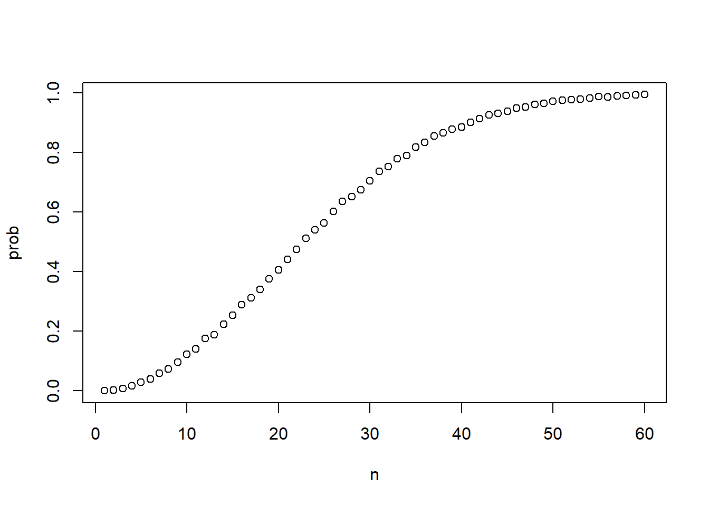
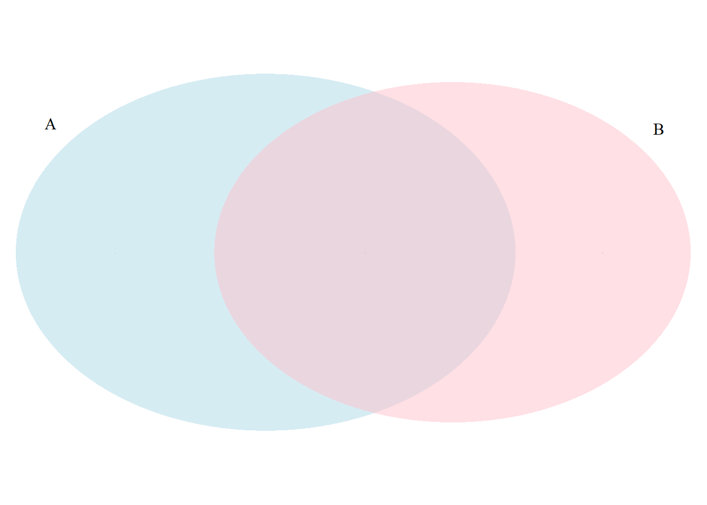

7 on probability and statistics
Last week, we considered Anscombe (1973a) and his quartet, and how visualizing data is valuable. This week, we move to a brief discussion of principles of statistics.
7.1 on probability
Discrete probability is used to understand the likelihood of categorical events. We can think of initial estimates of probability as subjective or personal. For some events (what is the probability this plane will crash?), an estimate of probability can be drawn from a base rate or relative frequency (e.g., p(this plane will crash) = (number of flights with crashes/ number of flights)). For other events (what is the probability that the US President will resign or be impeached before completing his term of office?), it may be hard to arrive at a suitable base rate. Here, a number of subjective beliefs or principles may be combined to arrive at a subjective or personal probability. In a sense, all probability estimates begin with a personal belief such as this, in part because the choice of the most informative base rate is often not self-evident - in the plane crash example, maybe we should consider a reference group rates such as ‘for this airline’ etc. (Lanning 1987). The personal origins of probability estimates should become less important as we are exposed to data and revise our estimates in accordance with Bayes theorem. But over the last 45 years, a substantial body of evidence has demonstrates that, under at least some circumstances, we don’t make estimates of probability in this way. (This material is discussed in the Thinking and Decision Making/Behavioral Economics class).
There is a nice r markdown document discussing basic laws of probability at Harvard’s datasciencelabs repository: https://github.com/datasciencelabs/2018/blob/master/lectures/prob/discrete-probability.Rmd; I include this here as an appendix to this chapter.
7.2 the rules of probability
Here’s an introduction to the principles of probability. These are presented, with examples and code, in the appendix at the end of the chapter.
I. For any event A, 0 <= P (A) <= 1
II. Let S be the sample space, or set of all possible outcomes. Then P(S) = 1, and P (not S) = 0.
III. If P (A and B) = 0, then P (A or B) = P (A) + P (B).
IV. P (A|B) = P (A and B)/ P (B)
Principle III applies for mutually exclusive events, such as A = you are here this morning, B = you are at the beach this morning. For mutually exclusive (disjoint, disjunctive) events, the union is the sum of the two events. This is called the addition rule for disjoint events.
A different rule applies for events that are mutually independent, such as (A = I toss a coin and it lands on ‘Heads’) and (B = it will rain tomorrow). What we mean by independent is that our estimates of the probability of one don’t change based on the state of the other - your estimate of the likelihood of rain shouldn’t depend on my coin flip. Here, you multiply rather than add:
If P (A|B) = P (A), then P (A and B) = P (A) P (B).
In words - if the probability of A given B equals the probability of A, then the probability of both A and B equals the probability of A times the probability of B.
Ask yourself - are mutually exclusive events independent? Come up with your own examples.
This multiplication rule is handy for estimating the probability of an outcome that happens following a chain of independent events, such as the probability that the next eight times I toss a coin it will land on “tails” every time:
P (TTTTTTTT) = P (T) P (T) P (T) P (T) P (T) P (T) P (T) P (T). = .58 = 1/256.
Many sets of events are neither disjoint nor independent, so we need more general ways of thinking about pairs of events. For most of us, Venn diagrams are useful to think about combining probabilities. The union or P (A U B) describes the probability that A, B, or both of these will occur. Here, you will use the general addition rule:
P (A or B) = P (A) + P (B) - P (A and B)
(the probability of A or B is the probability of A plus the probability of B minus the probability of both A and B).
For the intersection or P (A ∩ B), we need to consider conditional probabilities. Think of the probability of two events sequentially: First, what’s the probability of A? Second, what’s the probability of B, given that A has occurred? Multiply these to get the likelihood of A and B:
P (A and B) = P (A) P (B|A).
Example: The probability of you and your roommate both getting mononucleosis equals the probability of your getting mono times the probability that your roommate gets it, given that you have it also.
This is the general multiplication rule. In this abstract example, the order is irrelevant. To estimate the likelihood of A and B, we could as easily take the probability of B, and multiply it by the conditional probability of A given B
P (A and B) = P (B) P (A|B).
Use the mono example again. What are A and B here? Does it still make sense? When might P (B|A) make more sense than P (A|B)?
We are often interested in estimating conditional probabilities, in which case we’ll use the same equation, but solve instead for P (A|B). This leads us back to principle IV:
IV. P (A|B) = P (A and B)/ P (B)
What is the likelihood of getting in an accident (A), given that one is driving on I-95 (B)? How would you estimate this? If there are fewer accidents on Military Trail, does this mean that you would be safer there?
7.2.1 keeping conditional probabilities straight
In general, P (B|A) and P (A|B) are not equivalent. Moore’s (2000) Basic Practice of Statistics gives the example of
P (Police car | Crown Victoria) = .7, and P (Crown Vic | Police car) = .85.
Here, one could use an asymmetrical Venn diagram (see the code at the end of Chapter 5) to model this asymmetry. Consider adapting that code for this problem, or at the very least make a rough sketch that can help you answer the following question: > In general, if P (A|B) < P (B|A), what must be true of the relationship of P (A) to P (B)?
7.3 continuous probability distributions
We can also use probability with continuous variables such as systolic blood pressure (that’s the first one), which has a mean of approximately 120 and a standard deviation of 15. Continuous probability distributions are handy tools for thinking about the meaning of scores, particularly when we express scores in standard deviations from the mean (z scores). More to the point, this way of thinking about probability is widely used in questions of scientific inference, as, for example, in testing hypotheses such that “the average systolic blood pressure among a group of people studying at Crux (hence caffeinated) will be significantly greater than that of the population as a whole.”
This is part of the logic of Null Hypothesis Significance Testing (NHST) - if the result in my Crux sample is sufficiently high, then I say that I have rejected the null hypothesis, and found data which support the hypothesis of interest.
7.4 the most dangerous equation
Just as Tufte (2001) demonstrated that poor data visualizations can be dangerous, leading, for example, to the loss of life in the Challenger disaster, Wainer (2007a) shows that a lack of statistical literacy is also “dangerous.”
He argues that deMoivre’s equation is the most dangerous equation - this equation (for the standard error) shows that variability decreases with the square root of sample size. Other nominees include the linear regression equation (and, in particular, how coefficients may change or reverse when new variables are added) and regression to the mean. Regarding linear regression, we discussed (a little) Simpson’s paradox, that is, that the direction of regression coefficients may change when additional variables are added.
I argued that, from the standpoint of psychology, ignorance of regression to the mean was arguably more ‘dangerous’ than ignorance about the central limit theorem and standard error, in particular because regression effects contribute to an overestimate of the effectiveness of punishment and an under-appreciation of the effectiveness of positive reinforcement as tools for behavior change (Hastie and Dawes 2010).
7.5 appendix: notes on discrete probability
This section was downloaded from https://github.com/datasciencelabs/2018/blob/master/prob/discrete-probability.Rmd and run in R on February 3, 2019. They have licensed this material under https://creativecommons.org/licenses/by/3.0/, allowing it to be shared with attribution.
I have made minor changes to correct typos (e.g., republican -> Republican), but haven’t upoaded these back to GitHub.
7.6 Discrete Probability (see attribution in 7.5)
We will now transition to probability and statistical inference. We start by covering some basic principles related to categorical data. The subset of probability is referred to as discrete probability. It will help us understand the probability theory we will later introduce for numeric and continuous data, which is much more common in data science applications. Discrete probability is more useful in card games and other games of chance and we use these as examples.
7.6.1 Relative Frequency
The word probability is used in everyday language. For example, Google’s auto-complete of “What are the chances of” give us “getting pregnant”, “having twins”, and “rain today”. Answering questions about probability is often hard if not impossible. Here we discuss a mathematical definition of probability that does permit us to give precise answers to certain questions.
For example, if I have 2 red beads and 3 blue beads inside an urn and I pick one at random, what is the probability of picking a red one? Our intuition tells us that the answer is 2/5 or 40%. A precise definition can be given by noting that there are five possible outcomes of which two satisfy the condition necessary for the event “pick a red bead”. Because each of the five outcomes has the same chance of occurring we conclude that the probability is 0.4 for red and 0.6 for blue.
A more tangible way to think about the probability of an event is as the proportion of times the event occurs when we repeat the experiment over and over, independently, and under the same conditions.
7.6.2 Notation
We use the notation \(\mbox{Pr}(A)\) to denote the probability of event \(A\) happening. We use the very general term event to refer to things that can happen when something happens by chance. For example, in our previous example the event was “picking a red bead”. In a political poll in which we call 100 likely voters at random, an example of an event is “calling 48 Democrats and 52 Republicans”.
In data science applications, we will often deal with continuous variables. In these cases events will often be things like “is this person taller than 6 feet”. In this case we write events in a more mathematical form: \(X \geq 6\). We will see more of these examples later. Here we focus on categorical data.
7.6.3 Monte Carlo Simulations
Computers provide a way to actually perform the simple random experiment described above: pick a bead at random from a bag with three blue beads and two red ones. Random number generators permit us to mimic the process of picking at random.
An example is the sample function in R. We demonstrate its use in the code below. First, we use the function rep to generate the urn:
beads <- rep(c("red", "blue"), times = c(2,3))
beads## [1] "red" "red" "blue" "blue" "blue"and then use sample to pick a bead at random:
sample(beads, 1)## [1] "red"This line of code produces one random outcome. We want to repeat this experiment “over and over”. However, it is of course impossible to repeat forever. Instead, we repeat the experiment a large enough number of times to make the results practically equivalent. This is an example of a Monte Carlo simulation.
Note that much of what mathematical and theoretical statisticians study, something we do not cover in this course, relates to providing rigorous definitions of “practically equivalent” as well as studying how close a large number of experiments gets us to what happens in the limit. Later in this lecture we provide a practical approach to deciding what is “large enough”.
To perform our first Monte Carlo simulation we use the replicate function, which permits us to repeat the same task any number of times. Here we repeat the random event \(B=\) 10,000 times:
B <- 10000
events <- replicate(B, sample(beads, 1))We can now see if in fact, our definition is in agreement with this Monte Carlo simulation approximation. We can use table to see the distribution:
tab <- table(events)
tab## events
## blue red
## 5983 4017and prop.table gives us the proportions:
prop.table(tab)## events
## blue red
## 0.5983 0.4017The numbers above are the estimated probabilities provided by this Monte Carlo simulation. Statistical theory, not covered here, tells us the as \(B\) gets larger, the estimates get closer to 3/5 = 0.6 for blue and 2/5 = 0.4 for red.
This is a simple and not very useful example, but we will use Monte Carlo simulation to estimate probabilities in cases in which it is harder to compute the exact ones. Before we go into more complex examples we use simple ones to demonstrate the computing tools available in R.
7.6.4 With and without replacement
The function sample has an argument that permits us to pick more than one element from the urn. However, by default, this selection occurs without replacement: after a bead is selected, it is not put back in the bag. Note what happens when we ask to randomly select five beads:
sample(beads, 5)## [1] "blue" "red" "blue" "blue" "red"sample(beads, 5)## [1] "blue" "blue" "red" "blue" "red"sample(beads, 5)## [1] "blue" "blue" "red" "blue" "red"This results in re-arrangements that always have three blue and two red beads. If we ask that six beads be selected, we get an error
sample(beads, 6)Error in sample.int(length(x), size, replace, prob) : cannot take a sample larger than the population when 'replace = FALSE'
However, the sample function can be used directly, without the use of replicate, to repeat the same experiment of picking one out of the 5 beads, over and over, under the same conditions. To do this we sample with replacement: return the bead back to the urn after selecting it.
We can tell sample to do this by changing the replace argument, which defaults as FALSE, to replace = TRUE:
events <- sample(beads, B, replace = TRUE)
prop.table(table(events))## events
## blue red
## 0.598 0.402Note that, not surprisingly, we get results very similar to
those previously obtained with replicate.
7.6.5 Probability Distributions
Defining a distribution for categorical outcomes is relatively straight forward. We simply assign a probability to each category. In cases that can be thought of as beads in an urn, for each bead type their proportion defines the distribution.
If we are randomly calling likely voters from a population that is 44% Democrat, 44% Republican, 10% undecided and 2% Green party, these proportions define the probability for each group. The probability distribution is:
\[ \mbox{Pr}(\mbox{picking a Republican})=0.44\\ \mbox{Pr}(\mbox{picking a Democrat})=0.44\\ \mbox{Pr}(\mbox{picking an undecided})=0.10\\ \mbox{Pr}(\mbox{picking a Green})=0.02\\ \]
7.6.6 Independence
We say two events are independent if the outcome of one does not affect the other. The classic example are coin tosses. Every time we toss a fair coin the probability of seeing heads is 1/2 regardless of what previous tosses have revealed. The same is true when we pick beads from an urn with replacement. In the example above the probability of red is 0.40 regardless of previous draws.
Many examples of events that are not independent come from card games. When we deal the first card, the probability of getting a king is 1/13 since there are 13 possibilities: Ace, Deuce, Three, \(\dots\), Ten, Jack, Queen, and King, and there are 4 of each possibility (for the 4 suits hearts, spades, diamonds, and clubs), totaling 52 cards. Now if we deal a king for the first card, and don’t replace it into the deck, the probability of a second card being a king is less because there are only three kings left: the probability is 3 out of 51. These events are therefore not independent. The first outcome affects the next.
To see an extreme case of non-independent events, consider our example of drawing five beads at random without replacement:
x <- sample(beads, 5)If you have to guess the color of the first bead you predict blue since blue has a 60% chance. But if I show you the result of the last four outcomes:
x[2:5]## [1] "blue" "blue" "blue" "red"would you still guess blue? Of course not. Now you know that the probability of red is 1 since only a red bead remains. The events are not independent so the probabilities change.
7.6.7 Conditional Probabilities
When events are not independent, conditional probabilities are useful. We already saw an example of a conditional probability: we computed the probability that a second dealt card is a king given that the first was a king. In probability we use the following notation:
\[ \mbox{Pr}(\mbox{Card 2 is a king} \mid \mbox{Card 1 is a king}) = 3/51 \]
We use the \(\mid\) as shorthand for “given that” or “conditional on”.
Note that when two events, say \(A\) and \(B\), are independent we have
\[ \mbox{Pr}(A \mid B) = \mbox{Pr}(A) \]
This is the mathematical way of saying: the fact that \(B\) happened does not affect the probability of \(A\) happening. In fact, this can be considered the mathematical definition of independence.
7.7 Multiplication rule (see attribution in 7.5)
If we want to know the probability of two events, say \(A\) and \(B\), occurring, we can use the multiplication rule.
\[ \mbox{Pr}(A \mbox{ and } B) = \mbox{Pr}(A)\mbox{Pr}(B \mid A) \] Let’s use Black Jack as an example. In Black Jack you get assigned two random cards. After you see what you have, you can ask for more. The goal is to get closer to 21 than the dealer, without going over. Number cards 2-10 are worth their number in points, face cards (Jacks, Queens, Kings) are worth 10 points and aces worth 11 or 1 (you choose).
So, in a black jack game, to calculate the chances of getting a 21 in the following way by drawing an ace and then a face card, we compute the probability of the first being an ace and multiply by the probability of a face card given that the first was an ace: \(1/13 \times 12/51 \approx 0.018\)
The multiplicative rule also applies to more than two events. We can use induction to expand for more events:
\[ \mbox{Pr}(A \mbox{ and } B \mbox{ and } C) = \mbox{Pr}(A)\mbox{Pr}(B \mid A)\mbox{Pr}(C \mid A \mbox{ and } B) \]
7.7.0.1 Multiplication rule under independence
When we have independent events then the multiplication rule becomes simpler:
\[ \mbox{Pr}(A \mbox{ and } B \mbox{ and } C) = \mbox{Pr}(A)\mbox{Pr}(B)\mbox{Pr}(C) \]
But we have to be very careful before using this, as assuming independence can result in very different, and incorrect, probability calculations when we don’t actually have independence.
As an example, imagine a court case in which the suspect was described to have a mustache and a beard. The defendant has a mustache and a beard and the prosecution brings in an “expert” to testify that 1/10 men have beards and 1/5 have mustaches so using the multiplication rule we conclude that only \(1/10 \times 1/5\) or 0.02 have both.
But to multiply like this we need to assume independence! The conditional probability of a man having a mustache conditional on them having a beard is .95. So the correct calculation probability is much higher: 0.09.
Note that the multiplication rule also gives us a general formula for computing conditional probabilities:
\[ \mbox{Pr}(B \mid A) = \frac{\mbox{Pr}(A \mbox{ and } B)}{ \mbox{Pr}(A)} \]
To illustrate how we use these formulas and concepts in practice we will show several examples related to card games.
7.7.1 Combinations and Permutations
In our very first example we imagined an urn with five beads. Let’s review how we did this. To compute the probability distribution of one draw, we simply listed out all the possibilities, there were 5, and then, for each event, counted how many of these possibilities were associated with the event. So, for example, because out of the five possible outcomes, three were blue, the probability of blue is 3/5.
For more complicated examples these computations are not straightforward. For example, what is the probability that if I draw five cards without replacement I get all cards of the same suit; what is called a flush in poker? In a Discrete Probability course you learn theory on how to make these kinds of computations. Here we focus on how to use R code to compute the answers.
First let’s construct a deck of cards. For this we will use the expand.grid and paste functions. We use paste to create strings by joining smaller strings. For example, if we have the number and suit of a card we create the card name like this:
number <- "Three"
suit <- "Hearts"
paste(number, suit)## [1] "Three Hearts"paste also works on pairs of vectors performing the operation element-wise:
paste(letters[1:5], as.character(1:5))## [1] "a 1" "b 2" "c 3" "d 4" "e 5"The function expand.grid gives us all the combinations of entries of two vectors. For example if you have blue and black pants and white, grey and plaid shirts all your combinations are:
expand.grid(pants = c("blue", "black"), shirt = c("white", "grey", "plaid"))## pants shirt
## 1 blue white
## 2 black white
## 3 blue grey
## 4 black grey
## 5 blue plaid
## 6 black plaidSo here is how we generate a deck of cards:
suits <- c("Diamonds", "Clubs", "Hearts", "Spades")
numbers <- c("Ace", "Deuce", "Three", "Four", "Five", "Six", "Seven", "Eight", "Nine", "Ten", "Jack", "Queen", "King")
deck <- expand.grid(number=numbers, suit=suits)
deck <- paste(deck$number, deck$suit)With the deck constructed, we can now double check that the probability of drawing a king as the first card is 1/13. We simply compute the proportion of possible outcomes that satisfy our condition:
kings <- paste("King", suits)
mean(deck %in% kings)## [1] 0.07692308which is 1/13.
Now, how about the conditional probability of the second card being a king given that the first was a king ? Earlier we deduced that if one king is already out of the deck and there are 51 left then this probability is 3/51. Let’s confirm by listing out all possible outcomes.
To do this we can use the permutations function from the gtools package. This function computes, for any list of size n, all the different combinations we can get when we select r items. So here are all the ways we can chose 2 numbers from a list consisting of 1,2,3:
library(gtools)
permutations(3, 2)## [,1] [,2]
## [1,] 1 2
## [2,] 1 3
## [3,] 2 1
## [4,] 2 3
## [5,] 3 1
## [6,] 3 2Notice that the order matters here: 3, 1 is different than 1,3. Also note that (1,1), (2,2) and (3,3) don’t appear because once we pick a number it can’t appear again.
Optionally, we can add a vector. So if you want to see five random seven digit phone numbers, out of all possible phone numbers you could type:
all_phone_numbers <- permutations(10, 7, v = 0:9)
n <- nrow(all_phone_numbers)
index <- sample(n, 5)
all_phone_numbers[index,]Instead of using the numbers 1 through 10, the default, it uses what we provided through v: the digits 0 through 9.
To compute all possible ways we can chose two cards, when the order matters, we type:
hands <- permutations(52, 2, v = deck)This is a matrix with two columns and 2652 rows. With a matrix we can get the first and second card like this:
first_card <- hands[,1]
second_card <- hands[,2]Now the cases for which the first card was a king can be computed like this:
kings <- paste("King", suits)
sum(first_card %in% kings)## [1] 204To get the conditional probability we compute what fraction of these have a king in the second card:
sum(first_card %in% kings & second_card %in% kings) / sum(first_card %in% kings)## [1] 0.05882353which is exactly 3/51 as we had already deduced. Note that the code above is equivalent to
mean(first_card %in% kings & second_card %in% kings) / mean(first_card %in% kings)## [1] 0.05882353which uses mean instead of sum and is an R version of
\[ \frac{\mbox{Pr}(A \mbox{ and } B)}{ \mbox{Pr}(A)} \]
Now what if the order does not matter? For example, in Black Jack if you get an Ace and face card in the first draw it is called a Natural 21 and you win automatically. If we want to compute the probability of this happening we want to enumerate the combinations, not the permutations, since the order does not matter. Note the differences:
permutations(3,2)## [,1] [,2]
## [1,] 1 2
## [2,] 1 3
## [3,] 2 1
## [4,] 2 3
## [5,] 3 1
## [6,] 3 2combinations(3,2)## [,1] [,2]
## [1,] 1 2
## [2,] 1 3
## [3,] 2 3In the second line the outcome does not include (2,1) because the (1,2) already was enumerated. Similarly for (3,1) and (3,2).
So to compute the probability of a Natural 21 in Blackjack we can do this:
aces <- paste("Ace", suits)
facecard <- c("King", "Queen", "Jack", "Ten")
facecard <- expand.grid(number = facecard, suit = suits)
facecard <- paste(facecard$number, facecard$suit)
hands <- combinations(52, 2, v = deck)
mean(hands[,1] %in% aces & hands[,2] %in% facecard)## [1] 0.04826546Note that in the last line we assume the ace comes first. This is only because we know the way combination enumerates possibilities and it will list this case first. But to be safe we could have written this to get the same answer:
mean((hands[,1] %in% aces & hands[,2] %in% facecard) | (hands[,2] %in% aces & hands[,1] %in% facecard))## [1] 0.048265467.7.1.1 Monte Carlo Example
Instead of using combinations to deduce the exact probability of a Natural 21 we can use a Monte Carlo to estimate this probability. In this case we draw two cards over and over and keep track of how many 21s we get. We can use the function sample to draw two cards without replacement:
hand <- sample(deck, 2)
hand## [1] "Eight Spades" "Ten Spades"And then check if one card is an ace and the other a face card or a 10. Going forward we include 10 when we say face card. Now we need to check both possibilities:
(hands[1] %in% aces & hands[2] %in% facecard) | (hands[2] %in% aces & hands[1] %in% facecard)## [1] FALSEIf we repeat this 10,000 times, we get a very good approximation of the probability of a Natural 21.
Let’s start by writing a function that draws a hand and returns TRUE if we get a 21. The function does not need any arguments because it uses objects defined in the global environment.
blackjack <- function(){
hand <- sample(deck, 2)
(hand[1] %in% aces & hand[2] %in% facecard) |
(hand[2] %in% aces & hand[1] %in% facecard)
}Note that here we do have to check both possibilities: Ace first or Ace second because we are not using the combinations function. The function returns TRUE if we get a 21 and FALSE otherwise:
blackjack()## [1] FALSENow we can play this game, say, 10,000 times:
B <- 10000
results <- replicate(B, blackjack())
mean(results)## [1] 0.04887.7.2 Birthday Problem
Suppose you are in a classroom with 50 people. If we assume this is a randomly selected group of 50 people, what is the chance that at least two people have the same birthday? Although it is somewhat advanced, we can deduce this mathematically. We do this later. Here we use a Monte Carlo simulation. For simplicity, we assume nobody was born on February 29. This actually doesn’t change the answer much.
First note that birthdays can be represented as numbers between 1 and 365, so a sample of 50 birthdays can be obtained like this:
n <- 50
bdays <- sample(1:365, n, replace = TRUE)To check if in this particular set of 50 people we have at least two with the same birthday we can use the function duplicated which returns TRUE whenever an element of a vector is a duplicate. Here is an example:
duplicated(c(1,2,3,1,4,3,5))## [1] FALSE FALSE FALSE TRUE FALSE TRUE FALSEThe second time 1 and 3 appear we get a TRUE. So to check if two birthdays were the same we simply use the any and duplicated functions like this:
any(duplicated(bdays))## [1] TRUEIn this case, we see that it did happen. At least two people had the same birthday.
bdays## [1] 97 136 210 332 74 328 345 242 230 23 76 65 251 141 281 182 262
## [18] 363 139 284 342 78 238 46 98 141 5 140 318 125 176 219 181 68
## [35] 302 244 290 40 265 151 300 237 286 202 194 289 9 175 268 2537.7.3 sapply: a better way to do for loops
Say we want to use this knowledge to bet with friends about two people having the same birthday in a group of people. When are the chances larger than 50%? Larger the 75%?
Let’s create a look-up table. We can quickly create a function to compute this for any group size:
same_birthday <- function(n){
bdays <- sample(1:365, n, replace=TRUE)
any(duplicated(bdays))
}
compute_prob <- function(n, B=10000){
results <- replicate(B, same_birthday(n))
mean(results)
}And now we can use a for-loop to run it for several group sizes:
n <- seq(1,60)Now, for-loops are rarely the preferred approach in R. In general, we try to perform operations on entire vectors. Arithmetic operations, for example, operate on vectors in an element-wise fashion:
x <- 1:10
sqrt(x)## [1] 1.000000 1.414214 1.732051 2.000000 2.236068 2.449490 2.645751
## [8] 2.828427 3.000000 3.162278y <- 1:10
x*y## [1] 1 4 9 16 25 36 49 64 81 100No need for for-loops. But not all functions work this way. For example, the function we just wrote does not work element-wise since it is expecting a scalar (just one number). This piece of code does not run the function on each entry of n:
compute_prob(n)The function sapply permits us to perform element-wise operations on any function. Here is how it works:
x <- 1:10
sapply(x, sqrt)## [1] 1.000000 1.414214 1.732051 2.000000 2.236068 2.449490 2.645751
## [8] 2.828427 3.000000 3.162278It loops through the elements of the first argument of sapply and sends those as values to first argument of the function specified as the second argument to sapply. So for our case we can simply type:
prob <- sapply(n, compute_prob)We can now make a plot of the estimated probabilities of two people having the same birthday in a group of size \(n\):
prob <- sapply(n, compute_prob)
plot(n, prob)
7.7.4 How many Monte Carlo experiments are enough
In the examples above we used \(B=\) 10,000 Monte Carlo experiments. It turns out that this provided very accurate estimates. But in more complex calculations, 10,000 may not be nearly enough. Also for some calculations, 10,000 experiments might not be computationally feasible. In practice we won’t know what the answer is so we won’t know if our Monte Carlo estimate is accurate. We know that the larger \(B\) is, the better the approximation. But how big do we need it to be? This is actually a challenging question and answering it often requires advanced theoretical statistics training.
One practical approach we will describe here is to check for the stability of the estimate. Here is an example with the birthday problem for a group of 25 people.
B <- 10^seq(1, 5, len = 100)
compute_prob <- function(B, n=25){
same_day <- replicate(B, same_birthday(n))
mean(same_day)
}
prob <- sapply(B, compute_prob)
plot(log10(B), prob, type = "l")
In this plot we can see that the values start to stabilize, (vary less than .01), around 1000. Note that the exact probability, which we know in this case, is:
exact_prob <- function(n){
prob_unique <- seq(365,365-n+1)/365
1 - prod( prob_unique)
}
eprob <- sapply(n, exact_prob)
eprob[25]## [1] 0.56869977.7.5 Addition Rule
Another way to compute the probability of a Natural 21 is to notice that it is the probability of an ace followed by a facecard or a facecard followed by an ace. Here we use the addition rule
\[ \mbox{Pr}(A \mbox{ or } B) = \mbox{Pr}(A) + \mbox{Pr}(B) - \mbox{Pr}(A \mbox{ and } B) \]
This rule is intuitive: think of a Venn diagram. If we simply add the probabilities we count the intersection twice. 
## (polygon[GRID.polygon.11], polygon[GRID.polygon.12], polygon[GRID.polygon.13], polygon[GRID.polygon.14], text[GRID.text.15], text[GRID.text.16], text[GRID.text.17], text[GRID.text.18], text[GRID.text.19])In the case of Natural 21 the intersection is empty since both hands can’t happen simultaneously. The probability of an ace followed by a face card is \(1/13 \times 16/51\) and the probability of a face card followed by an ace is \(16/52 \times 4/51\). These two are actually the same which makes sense due to symmetry. In any case we get the same result using the addition rule:
1/13*16/51 + 16/52*4/51 - 0## [1] 0.048265467.7.6 Monty Hall Problem
In the 1970s there was a game show called “Let’s Make a Deal”. Monty Hall was the host. At some point in the game contestants were asked to pick one of three doors. Behind one door there was a prize. The other doors had a goat to show you had lost. After the contestant chose a door, Monty Hall would open one of the two remaining doors and show the contestant there was no prize. Then he would ask, “Do you want to switch doors?” What would you do?
We can use probability to show that if you stick to the original door your chances of winning a prize are 1 in 3 but if you switch, your chances double to 2 in 3! This seems counterintuitive. Many people incorrectly think both chances are 1 in 2 since you are choosing between 2. You can watch a detailed explanation here or read one here. Here we use a Monte Carlo simulation to see which strategy is better. Note that this code is written longer than it should be for pedagogical purposes.
Let’s start with the stick strategy:
B <- 10000
stick <- replicate(B, {
doors <- as.character(1:3)
prize <- sample(c("car","goat","goat"))
prize_door <- doors[prize == "car"]
my_pick <- sample(doors, 1)
show <- sample(doors[!doors %in% c(my_pick, prize_door)],1)
stick <- my_pick
stick == prize_door
})
mean(stick)## [1] 0.3358As we write the code we note that the lines starting with my_pick and show have no influence on the last logical operation. From this we should realize that the chance is 1 in 3, what we started out with.
Now let’s repeat the exercise but consider the switch strategy:
switch <- replicate(B, {
doors <- as.character(1:3)
prize <- sample(c("car","goat","goat"))
prize_door <- doors[prize == "car"]
my_pick <- sample(doors, 1)
show <- sample(doors[!doors %in% c(my_pick, prize_door)], 1)
stick <- my_pick
switch <- doors[!doors%in%c(my_pick, show)]
switch == prize_door
})
mean(switch)## [1] 0.6695The Monte Carlo estimate confirms the 2/3 calculation. This helps us gain some insight by showing that we are removing a door, show, that is definitely not a winner from our choices. We also see that unless we get it right when we first pick, you win: 1 - 1/3 = 2/3 of the time.
references
Anscombe, FJ. 1973a. “Graphs in Statistical Analysis.” American Statistician 27 (1): 17–21.
Lanning, Kevin. 1987. “Some Reasons for Distinguishing Between ‘Non-Normative Response’ and ‘Irrational Decision’.” The Journal of Psychology 121 (2): 109–17.
Tufte, Edward R. 2001. The Visual Display of Quantitative Information. 2nd ed. Cheshire, CT: Graphics Press.
Wainer, Howard. 2007a. “The Most Dangerous Equation.” American Scientist 95 (3): 249.
Hastie, Reid, and Robyn M Dawes. 2010. Rational Choice in an Uncertain World: The Psychology of Judgment and Decision Making. Sage.